Ce tutoriel a pour but de vous apprendre à manier le logiciel SolidWorks. Très complet et payant, Solidworks est souvent utilisé dans un cadre professionnel. Cependant, il existe des licences étudiantes valables un an. ;) Il permet de modéliser des pièces variées, des surfaces, et de les assembler par la suite, ainsi que de les soumettre à une batterie de tests.
Aucune connaissance en 3D ou dessin industriel n'est demandée ! :D
Exemples de réalisations : (voir introduction : "Comment modéliser sur SolidWorks")
Qu'est-il prévu d'aborder dans ce cours ?
Ce cours abordera les fonctions principales que propose SolidWorks :
Les esquisses
La modélisation volumique
La modélisation surfacique
La tôlerie
L'assemblage
L'animation
Le rendu dans PhotoView 360
Quelques exercices sont également disponibles à la fin de ce tuto.
J'éspère que Solidworks ainsi que ce tutoriel vont vous plaire, bonne lecture ! ;)
SolidWorks et un logiciel de CAO. Il a été créé en 1993 et a été acheté en 1997 par la société Dassault Systèmes.
Ce logiciel est différent de logiciel de 3D comme Maya, Blender, 3DS Max, et j'en oublie, car il ne s'agit pas de créer un maillage, un ensemble de points, faces... mais de directement créer des volumes à partir d'esquisses.
Ce logiciel sert à des ingénieurs, des concepteurs pour l'élaboration de plans de pièces mécaniques, de prévisualisation 3D, ... Ce logiciel est donc utilisé par des entreprises ayant comme secteurs d'activité l'industrie, la médecine, les transports, la grande consommation, les sciences, etc. Il est relativement facile à utiliser et à prendre en main, et est également très répandu dans les collèges et lycées, et dans les filières technologiques, où les élèves et étudiants l'utilisent pour les sciences de l'ingénieur et la technologie.
C'est la première question à se poser bien évidement !
SolidWorks étant un logiciel complet et professionnel, il est relativement cher. :( Cependant, il existe, pour les étudiants, une version spéciale, pour 12 mois. Je vous invite donc à vous rendre sur leur site : site de SolidWorks.
Sinon, et bien ... Trouvez une solution pour l'acquérir, ne serait-ce qu'en l'utilisant avec votre collège ou lycée, car il est très répandu dans les filières technologiques. ;)
En tous cas, il est préférable de l'avoir pour suivre ce tuto. Après l'avoir installé, vous pouvez continuer le tutoriel.
SolidWorks est assez intuitif, et modéliser une pièce est assez rapide contrairement à d'autres logiciels de CAO. Cependant, il existe quelques astuces pour se simplifier le travail, mais vous n'êtes bien évidement pas obligé de les utiliser. Pour ma part, j'utilise SolidWorks 2010.
Passons aux choses sérieuses ! :pirate:
Lancez SolidWorks.
Mais ! C'est tous gris !
Ne vous inquiétez pas ! C'est normal. :p Ceci est l'écran d'accueil de SolidWorks. Vous remarquez les différentes parties de l'interface :
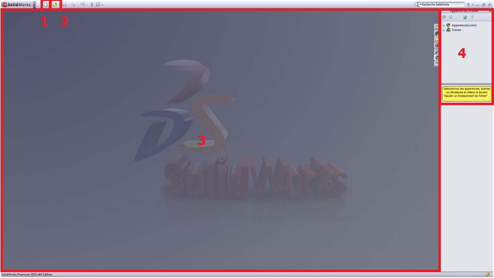
Nouveau fichier (Pièce, Assemblage, ...)
Ouvrir un projet existant
Zone de dessin
Apparence/Scène
Voici les principales parties constituant l'interface de SolidWorks.
Pour creer un nouveau projet, vous l'aurez deviné, cliquez sur "Nouveau". Là, une fenêtre apparait pour nous demander quelle sorte de projet nous voulons créer.
3 choix s'offrent à vous :
Créer un pièce
Créér un assemblage
Créer une mise en plan
Nous reviendrons sur sur ces parties plus tard.
Cliquez sur "Pièce", puis "OK". Vous devriez voir apparaître devant vos yeux ébahis, l'interface garnie d'onglets, de boutons et de menus ! :D
Mais, j'ai ouvert une nouvelle pièce, mais je n'ai pas les boutons n°6 !
Bien vu ! ;) Mon interface à moi a quelque peu changé par rapport à une interface classique. Mais ne vous en faîtes pas, on va voir ensemble comment personnaliser votre environnement de travail. Tout d'abord, les numéros :
Vous reconnaissez les boutons "Nouveau", "Ouvrir", et "Enregistrer".
Les Options !
Le bandeau principal, que nous utiliserons le plus souvent.
Diverses icônes : Vue en coupe, Zoom, Apparence, Vues, ...
L'Arbre de conception.
Un autre bandeau, que l'on utilisera pour les surfaces.
Nous reviendrons sur tout cela prochainement bien sûr, mais là n'est pas le sujet. Pour personaliser l'interface, cliquez sur la flèche sur le côté du bouton "Option". Une liste apparaît, cliquez sur "Personaliser".
Cochez ensuite "Surfaces" et "Tôlerie", ce qui aura pour effet d'ajouter à votre interface les barres d'outils correspondantes.
Cliquez ensuite sur l'onglet "Clavier", pour accéder aux raccourcis. Sélectionnez ensuite "Autre" dans la liste déroulante. Puis effectuez les modifications des raccourcis clavier, à votre guise bien sûr, pour faciliter votre travail ultérieurement.
Si vous choisissez "Num 1" pour "Face", cela voudra dire que quand vous voudrai orienter la vue sur le "devant" de la pièce, vous appuierai sur : 1 Et ainsi de suite pour l'arrière, le dessus, le coté gauche, droit de votre pièce.
Voilà donc votre interface personalisée. Bien évidement, vous pouvez ajouter de nouveau raccourci vous-même, vous savez maintenant comment faire. ^^
Maintenant que notre interface est bien personnalisée, que l'on sait comment créer un projet, attardons nous un peu sur des points importants pour comprendre comment procéder pour arriver à créer une pièce et un assemblage. ;)
Oui ! Modéliser. ;) C'est le terme couramment employé quand on fait de la 3D. Cela signifie en quelque sorte que l'on va créer une forme à l'aide des outils du logiciel. SolidWorks est un logiciel de CAO. Le fonctionnement est bien différent d'autres logiciels de 3D (Blender, Maya,...), car on ne va pas utiliser de maillage pour modéliser, mais bien des esquisses, auxquelles on va donner du volume. C'est pour cela que ce logiciel est surtout utilisé par l'industrie, pour modéliser des objets techniques.
Si vous espériez apprendre à modéliser un humain, à moin que celui-ci soit un robot humanoïde, vous frappez à la mauvaise porte ! :p
Nous avons rencontré dans les précédentes parties, quelques mots de vocabulaire. Nous allons les expliquer, et approfondir un peu sur la manière de procéder pour modéliser une pièce, pour que les choses soient claires.
Les projets
Vous vous souvenez ? La fenêtre qui apparaît quand on clique sur "Nouveau" ? :euh: Vous avez déjà oublié ! Bon, rappel :
La pièce, vous avez du comprendre, c'est une partie du projet. c'est une petite entité que l'on modélise. Les pièces sont ensuite assemblées dans ? un Assemblage ! :lol: Rien de compliqué !
Les esquisses
Les esquisses sont des petits "dessins" qui donnent le profil de votre pièce. Ne paniquez pas si vous ne comprenez pas tout dans ce chapitre, on y reviendra.
Donner du volume
Dans tous logiciel de CAO, vous avez les mêmes outils qui vous permettent de donner du volume à vos esquisses. On a :
L'extrusion
La révolution
Le balayage
Le lissage
Euh ... :euh:
Ne vous inquiétez pas ! Nous allons juste passer en revue les différentes fonctions qui caractérisent la CAO.
Les surfaces
La partie "surfacique" de SolidWorks permet comme son nom l'indique, de créer des surfaces. :D Une surface est un objet, défini par des esquisses, et qui a une épaisseur nulle. Rappelez vous, dans le chapitre sur la personnalisation, je vous ai demandé de cocher la cases "Surfaces" pour activer la barre d'outil du même nom. Comme vous pouvez le voir, il existe différentes manières de générer des surfaces :
Extrusion
Révolution
Balayage
Lissage
Remplissage
Plan
Décalage
Prolongement
La tôlerie
La tôlerie constituera une courte partie, car elle n'est pas beaucoup utilisée. Elle consiste a générer une plaque de tôle, et de la tordre, de la découper, ... Vous aurez ensuite la possibilité de la déplier (histoire d'avoir un patron) et vous pourrez entre autres exporter cette pièce en DWG, pour une utilisation sur AutoCAD par exemple. ;)
Le rendu sur Photoview 360
Cela constitue la dernière partie de ce tutoriel. Vous apprendrez les bases pour rendre une belle image de votre travail. ^^
Si vous venez de vous lancer dans la CAO, les quelques notions que je vous ai données précédemment ont sûrement dû vous sembler un peu floues. :p Je propose donc, pour les débutants, un exercice pratique pour se familiariser directement avec SolidWorks. Nous allons y voir quelques fonctionnalités pour bien démarrer sur SolidWorks.
Notre petit exercice consistera à modéliser cette petite pièce :
Nous allons donc commencer à utiliser plus concrètement SolidWorks. Vous êtes bien entendu prêt, avec une nouvelle pièce ouverte. :p
On se rappelle les étapes pour modéliser en CAO ?
Créer une esquisse sur un plan,
Donner du volume à cette esquisse.
Simple non ? ;)
Créer une esquisse
Au niveau du bandeau principal, vous remarquerez les onglets : "Fonctions", Esquisse", etc. Cliquez donc sur l'onglet "Esquisse" :
De nouveaux boutons apparaissent ! Pour créer une nouvelle esquisse, rien de sorcier, cliquez sur "Esquisse".
Choisir son plan
Les plans sont les supports de nos esquisses. Comme c'est un plan, il est... plat ! :lol: Au début de la conception de votre pièce, vous avez 3 plans qui vous sont proposés :
Plan de face
Plan de dessus
Plan de droite
Je ne les vois pas ! Où sont-ils ?
Petit flash-back :
Vous vous rappelez ? Le numéro 5 ? :euh: Il s'agit de l'Arbre de Conception. Ici vont s'ajouter toutes vos esquisses et vos objets crées avec celles-ci. Mais, me direz-vous, on ne le voit plus quand on a cliqué sur le bouton "Esquisse". Eh bien pourtant il y est :
Un peu à côté je vous l'accorde, mais il est là ! :D Vous n'avez qu'à cliquer sur le "+".
Comme vous pouvez le voir, nos trois plans sont là :
Pour modéliser notre pièce, nous commencerons par une esquisse sur le plan de dessus.
Cliquez donc sur le plan de dessus. Vous voilà donc fin prêt à commencer à dessiner !
Commencer à dessiner
Regardez ensuite le bandeau principal :
Vous observez une série de boutons, mais n'y faites pas attention pour le moment, nous n'allons nous intéresser qu'à quelques uns pour cet exercice. Commençons par esquisser un rectangle, à l'aide de ce bouton :
Dans votre l'espace au centre de l'écran, dessinez un rectangle.
Coter l'esquisse
Le rectangle est dessiné, mais il va falloir lui donner des mesures précises. C'est le rôle de la cotation.
Coter, c'est absolument nécessaire. :p
Pour coter, il faut cliquer ici :
Votre curseur se modifie. Cliquez simplement sur un coté du rectangle, cliquez ensuite un peu plus loin, puis, dans la fenêtre qui s'affiche, donnez la valeur de la cote :
Notre rectangle fera 50 mm par 100 mm. ;)
Terminez votre esquisse en appuyant sur :
Donner du volume
À partir de cette esquisse, nous allons obtenir un pavé ! Comment ? C'est très simple : on va extruder notre esquisse !
Extru-quoi ? o_O
L'extrusion consiste simplement à "tirer" sur l'esquisse pour la mettre en volume, selon une direction donnée. Cette direction est par défaut perpendiculaire au plan de l'esquisse. Regardez le bandeau principal :
Sélectionnez votre esquisse, cliquez sur "Basse/Bossage extrudé", un panneau apparait à gauche, et votre esquisse prend du volume ! Là ou il y a écrit "10.00 mm", ecrivez "20" :
Validez votre fonction en appuyant sur :
Et voici votre pavé !
Enlever du volume
Créez une autre esquisse sur la face du dessus. Pour ce faire, cliquez sur cette face puis sur le bouton esquisse (
). Dessinez un cercle, en appuyant sur ce bouton :
Placez votre cercle vers le centre, et donnez-lui un diamètre de 20 mm :
Terminez votre esquisse en appuyant sur :
Ce cercle va nous servir à trouer le pavé. Dans le bandeau principal, cliquez sur :
Il s'agit de la fonction "Enlèvement de matière extrudé". C'est l'inverse de l'extrusion que nous avions vu précédemment : là, nous enlevons de la matière. Dans le panneau qui apparait à gauche, semblable à celui de l'extrusion, écrivez "20" à la place du "10.00 mm". Validez votre fonction en appuyant sur :
Votre pavé est troué !
"Arrondir" les angles
Le terme exact est "congédier", c'est à dire appliquer un "congé". Il existe une fonction spéciale sur SolidWorks. Dans le bandeau principal, repérez et appuyez sur :
Un panneau apparait, vous pouvez alors sélectionner les arrêtes de votre pavé à arrondir, en cliquant simplement dessus :
Validez votre fonction en appuyant sur :
L'exercice est terminé ! Je le répète : si vous êtes perdus, ne vous en faîtes pas ! Vous comprendrez en lisant le reste du tuto ! ;)
La première chose que l'on est en droit de se poser est : Comment créer une esquisse, et à quoi peut-elle bien servir concrètement ? Ce chapitre est là pour y répondre. ;)
Si vous avez fait l'exercice précédent, vous devez être incollable sur la création d'esquisse ! Un petit résumé s'impose, avant d'approfondir vos connaissances sur les esquisses. ;)
Pour créer une esquisse : Cliquez sur l'onglet "Esquisse", puis sur "Esquisse".
Choisissez parmi les plans proposés (ou bien sur un face de votre pièce).
Pour valider une esquisse, il vous suffit de cliquer à nouveau sur :
Vous avez donc sélectionné votre plan, vous pouvez commencer à faire votre esquisse. Une esquisse est en fait un dessin, qui doit avoir un profil fermé. (Sauf dans certains cas comme le surfacique)
Commencer à dessiner
Regardez ensuite le bandeau principal :
Vous observez une série de boutons :
Un trait o_O
Un rond
Un rectangle
Un arrondi
Un zigzag arrondi
Un "A"
Il reste quelques autres boutons, mais ils sont moins utilisés. Vous pourrez ultérieurement les essayer. Nous allons donc les voir un par un :
La ligne
Cliquez sur le bouton "Ligne". Votre curseur se modifie.
Cliquez n'importe où sur la zone de travail, une ligne apparait !
Cliquez sur un autre endroit sur la zone de travail, cela termine la ligne. Vous pouvez alors sélectionner l'un des points aux extrémités de la ligne, et le déplacer. Voilà ! Une ligne !
La ligne de construction
La ligne de construction est très utile. Elle permet de créer un ligne qui reliera deux points, ou qui permettra de contraindre des éléments (voir contraintes), sans être considérée comme une partie du dessin : une fois l'esquisse crée, la ligne de construction n'a plus d'utilité pour la mise en volume de l'esquisse.
Une ligne de construction ressemble à ça :
Comme vous pouvez le voir, elle est en pointillé.
Pour en créer une, vous avez deux possibilités : Soit vous créez une ligne normale, comme vous savez le faire, puis vous cliquez dessus et vous cochez "Pour la construction" dans le panneau des propriétés qui est apparu :
Ou bien vous la créez directement, grâce au bouton apparaissant quand vous cliquez sur la flèche à coté du bouton "Ligne" :
Le cercle
Même manipulation : cliquez sur l'icône Cliquez n'importe où sur la zone de travail, vous placez ainsi le centre de votre cercle. Déplacez votre curseur plus ou moins loin du centre pour augmenter le diamètre.
Je vais maintenant refaire une courte parenthèse. ^^
Les points remarquables
Il existe quelques points remarquables :
Les extrémités d'une ligne.
Le milieu d'un segment :
Le point d'intersection entre deux objets (ligne, cercle, ...)
Les "points cardinaux" du cercle (carrés jaunes apparaissant sur le contour du cercle) :
Les points que vous créez vous même grâce à l'icône :
Le point "Origine" :
Je vous fait cette remarque pour vous permettre de commencer vos cercles, lignes, carrés, etc. à partir de ces points.
Le rectangle
Cela permet de créer... un rectangle !
L'arc de cercle
Cela permet de créer un arc de cercle en spécifiant le centre de l'arc, le point de départ et d'arrivée.
La spline
Qu'est-ce que c'est que cette bête là ? o_O
Il s'agit d'une courbe, passant pas plusieurs points. Une fois que vous avez créé cette courbe, vous avez la possibilité de changer la forme de cette courbe grâce à des poignées :
Comme ceci par exemple :
Faites le test, tirez sur les poignées, et vous verrez votre spline changer. Les splines sont très utilisées pour modéliser des voitures en surfacique.
Le texte
Le texte peut parfois être utile, si vous avez la flemme de tracer vous-même vos lettres avec des lignes ! :D Pour écrire un phrase : Créez une ligne de construction :
Sélectionnez-la en cliquant dessus, puis cliquez sur le bouton "Texte". Un panneau apparait sur le côté :
Vous observez les éléments suivants :
Valider
Le nom de votre "ligne guide"
Le cadre où vous écrirez votre texte
Les options de mise en forme du texte (gras, italique, centré, ajusté, retourné, ...)
Une case cochée :o
Maintenant, écrivez votre texte dans la case prévue à cet effet. Par exemple "Vive les zér0s" :
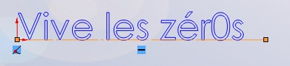
Comme vous le voyez, le texte s'ajoute le long de votre ligne guide. Grâce aux options de mise en forme, vous pouvez obtenir ceci par exemple : :soleil:
C'est vrai qu'on peut faire beaucoup de chose avec le texte mais on peut pas changer la police ? :euh:
Bien sûr que si ! Par défaut, SolidWorks utilise la "police du document". Vous pouvez la modifier dans les "options", mais il existe un autre moyen : décochez la case en bas du panneau. Cliquez ensuite sur "Police...", une fenêtre s'ouvre :
Vous pouvez maintenant choisir la police, la taille, l'espacement, les effets, ... Pour quitter l'édition du texte, cliquez sur "Valider" :
Les outils biens utiles
Nous allons nous intéresser à des outils, également situés dans le bandeau principal, qui permettent de nous simplifier le travail. Voici le bandeau :
Expliquons tous cela :
Ajuster
Rien ne vaut un bon exemple pour bien comprendre : Imaginez que vous avez deux droites sécantes:
Vous souhaitez ne garder que la partie basse. Vous utiliserez l'outil "Ajuster" :
Vous n'avez qu'à rester appuyé sur le bouton gauche de la sourie. Un trait gris apparait. Il vous suffit alors de déplacer la sourie vers les objets à ajuster. Vous constaterez qu'au point d'intersection entre le passage de votre sourie, et l'objet (ici la ligne), un carré rouge apparait.
Convertir les entités
Ce bouton nous servira plus tard, dans la partie surfacique. Il permet de convertir un profil de surface en une esquisse.
Décaler
L'outil "Décaler" permet de créer un contour à l’intérieur ou à l'extérieur de votre contour original :
Un contour jaune apparait, vous donnant ainsi une idée du contour que vous voulez ajouter. Sur le panneau à gauche, vous pouvez changer la distance de décalage (ici 2mm) ou encore inverser la direction du contour (intérieur ou extérieur).
Symétrie
Imaginez que vous deviez faire un contour qui comporte deux parties symétriques :
N'auriez vous pas la flemme de tout redessiner à côté ? :p La symétrie simplifie grandement le travail : Faite votre forme à symétriser:
Placez l'axe de symétrie en ligne de construction :
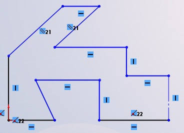
Sélectionnez le tout, puis cliquez sur le bouton "symétrie" :
Et voici votre forme symétrisée : :D
Répétition
Il existe deux formes de répétition : La répétition linéaire et la répétition circulaire.
La répétition linéaire consiste à répéter un motif selon une direction. Sélectionnez le motif à répéter, puis cliquez sur répétition linéaire :
Comme vous pouvez le voir, le motif sélectionné (ici le cercle) s'est répété autant de fois que je l'ai demandé : 4 fois. Il se répète le long de l'axe X. La distance qui sépare chaque motif est 6 mm. Il y a aussi possibilité de donner une "direction 2" :
Les outils de disposition
Nous avons :
Déplacer
Cet outil s'avérera très utile pour déplacer un objet ou groupe d'objet d'un point à un autre :
Sélectionnez le motif à déplacer, choisissez un point de départ, puis déplacez le tout vers un autre point. ;)
Copier
Pour la copie, c'est pareil, sauf que le motif d'origine ne bougera pas.
Faire pivoter
Toujours le même principe : choisissez un point de rotation, et choisissez l'angle :
Mettre à l'échelle
Toujours pareil ! La mise à l'échelle permet de redimensionner un objet tout en gardant ses proportions.
Étirer
Cet outil ne va pas nous servir. Mais nous allons quand même le voir. :)
Vous savez maintenant comment créer une esquisse, et y dessiner des formes. Mais ce qui est tout aussi important, c'est de coter ces formes ! C'est le sujet de ce chapitre. :p
Rappel : La cotation permet de donner une certaine mesure à un objet (ligne, cercle, ...) ainsi que de donner une certaine mesure entre des objets.
Une cote, ça ressemble à ça :
C'est à dire, un "trait" reliant un point à un autre, avec noté au dessus sa mesure. Vous pouvez donc dire en voyant cette cote, que la distance entre les extrémités de la ligne vaut ? 3,60 mm. ^^
Le bouton pour la cotation se trouve ici :
Cliquez donc dessus. Votre curseur se modifie. Cliquez sur la ligne à coter. D'ici vous avez trois directions de cotation possible :
Cotation horizontale
Cotation verticale
Cotation parallèle à l'objet
A vous de choisir, cela dépend de quelles données vous avez. Mais, bien entendu, il n'y a pas que les lignes qui se cotent ! Les cercles, les splines, les arcs, ... se cotent aussi !
Pour le cercle, deux types de cotes s'offrent à vous :
La cotation standard
La cotation spécifique au diamètre
Mais le type de cotation le plus utilisé est la cotation standard.
Nous allons maintenant nous intéresser à la cotation entre objets. Voici deux lignes :
Nous voulons que l'espace entre ces deux lignes mesure 5 mm. Cliquez sur la première ligne avec l'outil cote actif, puis sur la deuxième. Une cote s'affiche :
Définir la valeur de la cote
Votre cote placée, une petite boîte de dialogue apparait :
Vous n'avez plus qu'à taper votre valeur : 5 puis appuyez sur Entrée Maintenant, l'écart entre les deux lignes vaut 5 mm. :)
La cotation angulaire
Même principe, sélectionnez vos deux lignes formant un angle entre elles :
Vous maitrisez maintenant l'art de la cotation ! :p Mais nous allons nous intéresser à un dernier petit point sur la cotation. Quand vous commencerez à faire des projets importants, comme des voitures, vous aurez besoin pour vos pneus par exemple, de ce que j'appelle la cotation avancée.
Quand la boite de dialogue pour spécifier la valeur de la cote s'ouvre, vous observez une flèche à droite de la zone ou vous entrez votre valeur :
Cliquez dessus, une liste déroulante apparait :
Cliquez sur "Ajouter une équation...". Deux fenêtres s'ouvrent, dont une calculatrice :
Dans le rectangle blanc prévu à cet effet, vous pouvez écrire l'équation donnant la valeur de votre cote. Cette fonction est très pratique, car on a parfois besoin de "pi" pour coter certains éléments. Une fois votre équation rentrée, validez en apuyant sur "OK". La deuxième fenêtre se dévoile alors :
Vous avez la valeur de votre équation, et donc de votre cote, vous pouvez la rééditer si vous voulez. Validez en appuyant sur "OK". Votre cote se met à jour.
Une relation lie plusieurs objets entres eux. Elle permet de contraindre une esquisse, afin de ne pas avoir de surprises en la modifiant. Ainsi, il est fondamental de contraindre une esquisse avec des relations !
Le symbole de la relation sur SolidWorks est :
Vous vous êtes peut être déjà posé des questions, dans les chapitres précédents, quand vous voyiez, dans les exemples, des petit carrés avec un dessin dedans.
Ces petits carrés représentent des relations. Nous allons recenser toutes les relations dans la partie suivante. ;) Pour créer une relation, sélectionnez les objets à contraindre, puis, dans le panneau qui apparait, sélectionnez la relation que vous souhaitez ajouter :
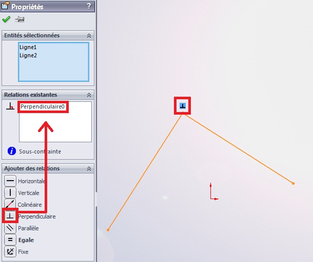
Comme vous le voyez, la relation "perpendiculaire" s'est ajoutée.
Cette partie sera majoritairement théorique. :( Mais elle est très importante, car l’arbre de création, comme nous allons le voir, est comment dire ? TRÈS utile. :p Il est obligatoire de bien connaitre ses fonctionnalité et son mode de fonctionnement.
L'arbre de création, ou, comme l'appelle SolidWorks : "L'arbre de création FeatureManager", donne la hiérarchie de la conception de la pièce ou de l'assemblage. Il permet de visualiser rapidement comment et de quoi la pièce est constituée.
L'arbre de création se situe ici :
Il nous renseigne sur différentes choses :
Le nom de la pièce (ici "écrou")
Les plans
Les fonctions utilisées pour réaliser la pièce, écrites dans l'ordre de conception.
Il vous suffit de cliquer sur une fonction pour que celle-ci se colore dans la zone de conception :
Dans la partie qui suit, nous allons nous intéresser de plus près aux fonctionnalités de l'arbre de création.
L'arbre de création ne permet pas seulement de présenter la hiérarchie du projet, ou de sélectionner une fonction, il propose aussi d'autres fonctionnalités.
Fonctionnalités principales
Nous allons dresser une liste des fonctionnalités de cet arbre. Pour commencer, les fonctionnalités principales.
Renommer
Vous pouvez renommer une fonction ou une esquisse : cliquez une fois sur la fonction, attendez une demi seconde puis re-cliquez. Vous pouvez maintenant renommer votre fonction :
Éditer une fonction
Vous venez de créer une fonction, mais pour une raison x ou y vous voulez la modifier, vous le pouvez ! :D Cliquez avec le bouton droit de la sourie sur la fonction à renommer puis cliquez ici :
Ici, la fonction à rééditer est la fonction congé, que je viens de renommer en "arrondi" plus haut.
Cacher
Voici une fonction bien utile parfois. Vous souhaitez cacher un élément (fonction, esquisse, ...), il vous suffit de cliquez sur un bouton et pouf ! disparu ! :magicien: Cliquez pour agrandir La surface en rouge est une surface faite uniquement pour "restreindre" une autre surface. Il faut donc la cacher une fois la restriction effectuée. Ne vous sentez pas perdu, ceci constituera notre chapitre sur les surfaces.
Alors, pour cacher un élément, cliquez dessus comme vous le feriez pour le rééditer, et cliquez sur l’icône :
Votre élément se cache.
Autres fonctionnalités
Les fonctionnalités vues précédemment sont les principales, les plus utilisées. Cependant il en reste d'autres.
La création de dossiers
Une fonction utile pour les gros projets, nécessitant un grand nombre de fonctions. Pour ajouter un dossier, cliquez sur une fonction au hasard, toujours avec le clic droit de la sourie. Cliquez ensuite sur :
Un nouveau fichier s'est crée, il est visible dans l'arbre de création. Vous pouvez le monter ou le descendre dans la liste de fonction, et il vous suffit d'y déplacer les fonction à y inclure par simple glisser-déplacer. ;)
Maintenant, vous savez tout sur l'arbre de création ! :soleil:
La géométrie telle que je vais vous la présenter se compose de deux parties :
La géométrie de référence
Les courbes
Je les ai mis dans le même panier car c'est préférable de les voir en même temps, même si vous vous doutez bien que ce n'est pas tout à fait la même chose.
Regardez à nouveau le bandeau, la patie qui nous interesse est ici :
La partie courbe sera très rapide, et ne portera son attention que sur l'hélice. La partie géométrie intéressera quant à elle sur :
Cette partie est très importante. Les plans vous servirons TOUT LE TEMPS. Il est donc logique que nous les abordions dans ce tutoriel. :D
C'est quoi un plan ?
Citation : Wikipédia
Un plan est un objet fondamental à deux dimensions. [...] il peut être visualisé comme une feuille d'épaisseur nulle qui s'étend à l'infini.
Quand vous créez une esquisse, vous dessinez sur un plan, en 2 dimensions.
Une face en temps que plan
Le plan que nous utiliserons le plus souvent est évidement une face même de notre pièce. Pour créer une esquisse sur une face, rien de plus simple : cliquez sur la face en question, et appuyez sur ce bouton :
Vous pouvez ensuite dessiner.
L'outil plan
Pour créer un plan, cliquez sur ce bouton :
Un panneau apparait ensuite :
Comme vous pouvez le constater, l'outil plan marche avec des "références" Il va donc falloir lui donner des renseignements pour qu'il comprenne exactement ce que l'on souhaite. Pour ce faire nous avons plusieurs options à notre disposition. Pour l'exemple, sélectionnez le plan de face. Les fameuses options apparaissent.
Imaginons que vous vouliez créer un plan parallèle au plan de face, espacé de celui-ci de 10 mm, vous écrirez dans la case correspondant à l'espace (sélectionnée par défaut), la valeur 10. Cela vous génèrerai un plan comme ceci :
Jusque là, ça devrai aller. Mais ça va légèrement se corser si vous voulez un plan perpendiculaire au plan de face. Dans ce cas, il va falloir donner à l'outil "Plan" une autre référence : un axe. Nous étudierons les axes dans le chapitre suivant. Je vais donc vous faire la démonstration rapidement :
Le plan que vous allez créer est perpendiculaire au plan de face, et "passe" par l'axe 1. :D
Il existe beaucoup de combinaisons pour générer un plan. Les deux précédentes sont très utilisées, mais il reste un dernier cas à voir : Cette option permet de générer un plan ayant un certain angle avec un plan :
Validez votre plan en appuyant sur :
Vous pouvez ensuite nommer ou renommer votre plan, ainsi que le redimensionner, en tirant simplement sur les "p'tites boules" :p :
Les axes sont moins utilisés que les plans, mais peuvent s'avérer utiles, comme nous l'avons vu dans le chapitre sur les plan.
Commençons : un axe est défini par une direction. Pensez à une droite en fait. ^^ Un axe peut servir à générer un plan, mais aussi (et surtout) à effectuer une rotation autour de celui-ci ou encore à symétriser un objet.
Pour créer un axe, cliquez sur ce bouton :
Comme pour l'outil plan, un panneau apparait :
La géométrie étant un chapitre relativement simple, je ne m'attarderai pas beaucoup.
Comme vous pouvez le voir, un axe peut être défini par :
Une arrête
Une intersection entre deux plans
Deux points
Le centre de révolution d'une face cylindrique ou conique
Les points sont les éléments de géométrie les moins utilisés. Un point peu servir à définir un plan ou un axe.
Cliquez sur ce bouton :
Plusieurs options s'offrent alors à vous pour créer un point :
Le centre d'un arc
Le centre d'une face
L'intersection
La projection : un point existant est "projeté" sur une face, à la perpendiculaire.
La "répartition" : un point est créé sur une arrête, soit à une certaine distance du premier sommet de cette arrête, soit à un pourcentage de l’arrête, soit une répartition le long de l’arrête d'un certain nombre de points.
Changeons un peu de thème, fini les plan, les axes, les points ! :D Nous allons étudier à présent les hélices. Elles seront très utiles lors de la création d'une vis par exemple.
Pour créer une hélice, nous avons besoin d'un profil circulaire (exemple : cylindre) ou d'une esquisse ne contenant qu'un seul cercle.
Créez donc d'abord une esquisse ne contenant qu'un seul cercle. Cliquez sur ce bouton :
Un panneau apparait :
Le vocabulaire est spécifique, il faut donc essayer de le comprendre avant toute chose :
Le pas
Citation : Wikipédia
Le pas de vis, correspond à la distance relative parcourue en translation par une vis par rapport à son écrou lors d'un tour complet. Par exemple, une vis avec un pas de 1,25 avancera de 1,25 mm lors de la rotation d'un tour pour un pas métrique.
Je ne sais pas si vous avez bien tout compris, mais en image cela donne :
La révolution
C'est le tour complet effectué par une hélice. Le nombre de révolutions correspond donc au nombre de tour effectué. ;)
Maintenant, définissons notre hélice : Par exemple, entrez les valeur suivantes :
Commençons par un chapitre simple, sur l'extrusion. Rappel : L'extrusion consiste simplement à "tirer" sur l'esquisse pour la mettre en volume, selon une direction donnée. Cette direction est par défaut perpendiculaire au plan de l'esquisse.
Tout d'abord, créez une esquisse. Prenons celle ci :
Sur le bandeau principal, cliquez ici :
Sélectionnez votre esquisse, cliquez sur "Basse/Bossage extrudé", un panneau apparait. Voici le détail du panneau :
Le sens d'extrusion
Le type d'extrusion
La direction d'extrusion
La hauteur d'extrusion
La "direction 2", qui permet d'extruder dans le sens inverse (ici vers le bas)
Vous pouvez modifier la hauteur d'extrusion bien entendu. :D
Les différents types d'extrusion
Changer le type d'extrusion peut souvent s'avérer très utile. Nous allons passer chaque cas en revue. ;)
Borgne
C'est le type d'extrusion par défaut. Il suffit de rentrer la hauteur d'extrusion.
Jusqu'au sommet
Permet d'extruder notre profil (esquisse) jusqu'à un point :
Jusqu'à la surface
Même principe que "Jusqu'au sommet" sauf que là, c'est jusqu'à une surface.
Translaté par rapport à la surface
Eh bien là, c'est une fonction que je n'ai jamais eu à utiliser. :euh: Je vous montre donc à quoi ça ressemble :
Jusqu'au corps
Toujours le même principe que "Jusqu'au sommet" sauf que là, c'est jusqu'à un corps.
Plan milieu
Fonction bien utile, qui évite d'avoir à renseigner la "direction 2". Elle permet d'extruder la même hauteur de chaque coté :
Voilà, on a fait le tour des type d'extrusion.
La direction d'extrusion
La direction d'extrusion est par défaut perpendiculaire au plan de l'esquisse. Mais vous pouvez la changer, donner une autre direction :
Vous ne pensiez pas que nous allions en rester à l'extrusion ! :p Dans cette partie, nous allons étudier la révolution, indispensable pour un objet de forme cylindrique par exemple.
Tout d'abord, passons par l'étape théorique : Une révolution est la rotation d'un profil autour d'un axe. L'esquisse tourne autour de son axe, ce qui lui donne du volume :
Il nous faut donc obligatoirement :
Un profil (esquisse)
Un axe
C'est parti ! Créez une nouvelle esquisse, sur le plan de votre choix, semblable à celle ci-dessous :
Sortez de l'esquisse en cliquant sur le bouton :
Ensuite, sélectionnez votre esquisse et appuyez sur le bouton :
Vous obtenez ceci :
Ici l'axe de rotation est votre ligne de construction, et la révolution fait un tour complet (360°) :)
Le lissage créé un volume constituée de deux profils ou plus. Passons directement à l'exemple, vous allez comprendre. ;)
Créez trois esquisses parallèles :
Sélectionnez ensuite vos trois esquisses, puis cliquez sur le bouton :
Un panneau apparait :
On vous donne les profils sélectionnés (nos 3 esquisses), ainsi qu'un aperçu du rendu final. Les points bleus sont en quelque sorte le "fil conducteur" de votre lisage. Il détermine la forme que va prendre celui-ci. Essayez de bouger ces points, la forme change.
Vous avez également la possibilité d'ajouter une "courbe guide". Elle doit obligatoirement passer par les trois profils. Elle permet de donner des formes plus complexes au lissage.
Nous allons donc attaquer l'enlèvement de matière.
Bien évidemment, pour enlever de la matière, il faut en avoir un minimum. :p Pour effectuer une extrusion, créez une esquisse avec le profil à enlever. Cette esquisse, pour un enlèvement de matière simple, sera généralement dessinée sur la face à trouer :
Sélectionnez votre esquisse, puis cliquez sur le bouton :
Un panneau apparait :
Comme vous pouvez le remarquer, le panneau est semblable à celui d'une extrusion "normale". ;) Vous avez donc les mêmes options de présenter, nous ne reviendrons pas dessus. Vous pouvez voir l’aperçu en jaune de ce que ça va donner. Il est tourné vers l'intérieur de la pièce, c'est bien normal. :D
J'ai décidé de regrouper ces deux fonctions dans une seule partie car elles sont moins utilisées que les deux précédentes. Toujours la même façon de procéder : On crée une ou plusieurs esquisse(s), et on clique sur le bouton correspondant à la fonction souhaitée.
C'est bien beau de faire des jolies formes, et des jolies trous, mais il existe encore quelques outils ! Ils peuvent beaucoup nous simplifier la vie vous verrez ! :p
Voici donc notre premier outil : le congé. Pour les puristes, un congé enlève de la matière, en arrondissant une arrête. Mais SolidWorks permet aussi d'en ajouter, quand l’arrête se trouve dans un angle convexe, ce qui correspond plutôt à une soudure. ;)
Nous allons prendre comme base un pavé extrudé :
Appuyez ensuite sur le bouton :
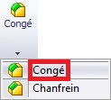
Un panneau s'affiche alors :
Vous pouvez paramétrer le rayon du congé. Vous pouvez ensuite sélectionner sur votre pièce les arrêtes et les faces à arrondir.
Cet outil peut s'avérer utile dans certains cas, comme ici la modélisation d'une boite. Nous allons partir, comme précédemment, d'un pavé extrudé :
Sélectionnez la face ou le "trou" sera fait, puis cliquez sur le bouton :
Vous avez également la possibilité de créer une coque vers l'extérieur. L'outil coque vous ajoutera donc une sur-épaisseur de la taille que vous souhaitez.
L'enroulement est une fonction qui permet de plaquer un motif (esquisse) sur une face généralement cylindrique. Cet outil sert lors de la conception de pneus par exemple ;) Vous devez donc créer un cylindre :
Puis créer un plan tangent ou passant par le centre du cercle :
Dessinez ensuite votre esquisse, en prenant comme repère le centre du cercle :
Sélectionnez votre esquisse, puis cliquez sur le bouton :
Un panneau apparait alors :
Trois options s'offrent a vous :
Le gaufrage
Le dégaufrage
Le traçage
Le gaufrage ajoute de la matière, le dégaufrage en enlève, et le traçage projette le profil sur la surface. Sélectionnez ensuite la face où effectuer l'enroulement, puis la hauteur/profondeur de l'enroulement.
Deux autres outils bien utiles, la répétition et la symétrie.
La répétition
Elle peut être linéaire ou circulaire.
Répétition linéaire
La répétition permet de dupliquer des fonctions (extrusions, révolutions, ...) un certain nombre de fois pour ne pas avoir à toutes les modéliser. La répétition standard consiste à répéter une fonction de façon linéaire, c'est à dire en suivant un axe. Pour effectuer une répétition linéaire, sélectionnez le ou les fonction(s) à répéter.
Cliquez ensuite sur le bouton :
Un panneau s'affiche :
Direction de répétition (arrête, axes, plan, ...)
Espacement entre les occurrences
Nombre d'occurrences
Direction 2 (facultatif)
Espacement entre les occurrences
Nombre d'occurrences
Fonction(s) à répéter
Répétition circulaire
C'est la même chose, sauf que vous avez besoin d'un axe. Sélectionnez la ou les fonction(s) à répéter :
Cliquez sur le bouton :
Un panneau apparait :
Comme vous pouvez le voir, la fonction choisie est répétée 5 fois. Pour la rotation, je n'ai pas choisi un axe mais une face cylindrique. ;)
La symétrie
La symétrie est très utile pour des projets comme des voitures, ou l'on modélise un côté, puis on symétrise l'autre. :-° Choisissez le ou les fonction(s) à répéter :
Puis appuyez sur le bouton :
Un panneau s'affiche alors :
Choisissez votre plan ou axe de symétrie. Voici le résultat : :-°
Vous remarquerez cependant que la symétrie n'est pas complète. Ici, la symétrie ne portait que sur la partie surfacique. ;)
Nous en avons fini avec la partie volumique. Nous allons pouvoir attaquer les surfaces ! Vous pouvez, et je vous le conseille, vous entrainer à faire de petits projets, comme des objets qui vous entourent, pour bien maitriser les différentes fonctions. :)
Vous avez appris à modéliser des pièces (pour l'instant en volumique) mais nous allons voir maintenant que nous pouvons les assembler entre elles. Pour cela, modélisez vos pièces auparavant, dans des fichiers séparés bien entendu. Un fichier de pièce à pour extension .SLDPRT et un assemblage .SLDASM.
Vous avez donc modéliser vos pièces, puis les avez enregistrées.
Pour créer un nouvel assemblage, appuyez sur le bouton :
Une nouvelle interface, un peu moins chargée s'affiche :
Comme vous pouvez le noter, différentes options s'offrent à vous. Vous avez la possibilité de créer des éléments de géométrie de référence, de déplacer les composants. Un nouveau dossier nommé "Contraintes" est apparu dans l'arbre de création.
Votre fichier assemblage créé, vous devez ajouter des fichiers de pièces. Cliquez sur le bouton :
Un panneau apparait :
Cliquez ensuite sur "Parcourir". Une fenêtre s'affiche :
Sélectionnez la pièce à ajouter, puis appuyez sur "Ouvrir". Votre pièce s'est ajoutée :
Cette pièce est fixée. Vous ne pouvez pas la déplacer. Vous pouvez savoir si une pièce est fixée grâce à l'arbre de création. Un "(f)" est écrit avant le nom :
Maintenant, ajoutez les autres pièces :
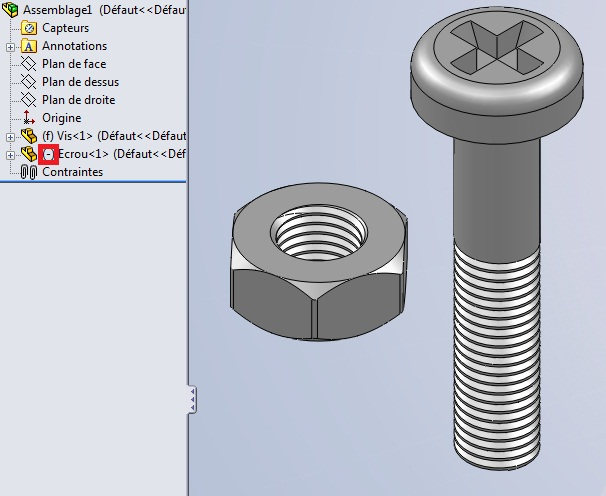
L'écrou lui, est libre. Vous le savez car déjà, vous pouvez le déplacer, et qu'il y a un "(-)" écrit avant le nom.
Nous allons maintenant nous intéresser aux contraintes. Ce sont des liaisons entre deux pièces. Nous les avons déjà abordées au cours de la partie concernant l'esquisse. ;) Cependant, pour les assemblages, leur nombre est plus important.
Pour contraindre deux pièces entre elles, cliquez sur l’icône :
Un panneau s'ouvre :
Sélectionnez alors les faces/arêtes/points/plans des deux pièces à contraindre.
Les pièces sélectionnées bougent, puis un petit bandeau apparait, contenant toutes les contraintes possible entre vos sélections :
Pour ma part, j'ai sélectionné la face cylindrique de la vis, et l'ai contraint avec la face cylindrique de l'écrou. La relation est donc de type coaxiale : Les deux faces ont un axes commun. ;)
Pour valider cette relation, appuyez sur le bouton :
Vos deux pièces ont maintenant une certaine relation qui les contraint. Cette relation est visible ici :
Mais il est souvent nécessaire d'avoir plusieurs contraintes pour que deux pièces soient fixe entre elles : Ici, mon écrou peut encore "coulisser" le long de la tige, ou encore tourner sur lui-même. Recliquez donc sur :
Sélectionnez la face du dessus de l'écrou, et la base de la tête de la vis :
Par défaut, la contrainte est "coïncidente". Mais nous voulons seulement mettre l'écrou au niveau du début du filetage. Choisissez donc "distance" :
Entrez alors la valeur "60" :
Et c'est bon ! L'écrou ne peu plus se balader !
Mais il reste encore un degré de mouvement possible : l'écrou peu tourner sur lui-même. Pour y remédier, cliquez sur :
Sélectionnez un côté de l'écrou, et le plan de face :
Puis sélectionnez la contrainte "parallèle" :
Maintenant, la vis et l'écrou sont totalement contraints !
Il existe bien entendu d'autres contraintes que les trois que nous venons de voir. Elles se regroupent en trois catégories :
Les contraintes standard
Les contraintes avancées
Les contraintes mécaniques
Les plus utilisées sont les contraintes standard. Mais les deux autres catégories sont utiles pour les engrenages, les pivots, etc. Commençons ! :D
Les contraintes standard
Coïncidente
Vous devez surement vous en douter, les deux objets sélectionnés se "collent". :D
Parallèle
Les deux objets serons parallèles.
Perpendiculaire
Les deux objets serons perpendiculaires.
Tangente
Cette contrainte s'utilise entre une face cylindrique et un plan, une face. Les deux sélections serons tangentes.
Coaxiale
Cette contrainte permet de donner à deux faces cylindriques le même axe, comme on donne à deux cercles le même centre (concentrique).
Blocage
Les deux objets sélectionnés serons bloqués entre eux. leurs mouvements serons liés.
Distance
Cette contrainte permet de spécifier une distance entre deux sélections.
Angle
Cette contrainte permet de spécifier un angle entre deux sélections.
Les contraintes avancées
Symétrie
La symétrie permet à deux objets de se comporter de façon symétrique par rapport à un plan.
Glissière
La glissière permet à un objet de se déplacer toujours à égale distance de deux autres sélections. Voici un exemple :
Ici, les faces violettes sont respectivement à la même distance des faces oranges. Le petit carré en bois coulisse donc entres les deux pavés.
Nous avons fait le tour des contraintes avancées que vous aurez peut-être l'occasion d'utiliser. Et je vous avouerez que je ne connais pas les autres. :-°
Les contraintes mécaniques
On trouve les contraintes : Came, Pivot, Pignon-crémaillère, Hélicoïdale, Liaison cadran. Les contraintes mécaniques sont vraiment très spécifique à votre projet. Si vous modélisez un pivot, un engrenage, vous les utiliserez. Nous n'allons donc pas nous y intéresser. :)
Nous allons donc débuter la partie sur les surfaces. Pour commencer, nous allons nous intéresser aux esquisses 3D, qui peuvent se révéler utiles, ainsi qu'aux courbes projetées.
Une esquisse 3D peut être utilisée dans la modélisation volumique, mais c'est surtout dans la modélisation surfacique, pour délimiter des surfaces, que nous allons nous en servir. Dans cette partie, ou nous traiterons des esquisses 3D et des courbes projetées, nous ne créerons pas de surfaces. :)
Commençons !
Pour créer une esquisse 3D, il suffit d'appuyer ici :
Apparaît alors le bandeau standard d'édition d'esquisse. Vous pouvez donc dessiner en 3D. :D
Le signe entouré en rouge indique que le trait est aligné sur un des axes x, y ou z, ici z.
De nouvelles contraintes ont également fait leur apparition, permettant d'aligner des segments sur les axes de référence :
Vous avez également la possibilité de déplacer les entités le long des axes de référence, à laide du bouton "Déplacer les entités" que vous connaissez, ou à laide du tièdre, que vous obtenez en cliquant droit sur les objets à déplacer et en sélectionnant :
Vous connaissez également les outils de l'esquisse 2D. ;)
Les courbes projetées sont très utiles pour le surfacique. Elles permettent de créer une esquisse 3D à partir de deux esquisses 2D, ainsi que de projeter une esquisse 2D sur une face ou une surface. Pour créer une courbe projetée, il faut au préalable avoir deux esquisses ou une esquisse et une face.
Courbe "esquisse sur esquisse"
Créez votre première esquisse :
Puis la deuxième (sur un plan différent bien sûr) :
Cliquez ensuite sur le bouton :
Un panneau apparaît. Sélectionnez "Esquisse sur esquisse" et les esquisses que vous venez de créer :
Le contour jaune vous donne un aperçu de votre courbe. Valisez en appuyant sur
Voila, votre courbe est crée ! :D
Courbe "Esquisse sur faces"
Commencez par créer une surface par exemple :
Puis, sur un autre plan, votre esquisse :
Cliquez sur le bouton "Courbe projetée", sélectionnez "Esquisse sur faces", et choisissez vos esquisses :
Nous allons enfin modéliser notre première surface ! :D Pour ce faire, vous aurez besoin d'un profil. Pour commencer, nous allons créer une simple surface plane. Nous devez donc créer une esquisse 2D pour le contour de cette surface. Allons y !
Pour générer une surface, vous avez la possibilité d'effectuer un lissage, ou de créer une surface frontière. Les deux fonctions sont à peu près identiques, elles permettent de créer un surface entre deux profil, et éventuellement des "rails".
Lissage
Commencez donc par créer deux esquisses qui vous servirons de profil :
Puis, pour effectuer un lissage, appuyez sur :
Un panneau s'ouvre :
Sélectionnez vos deux profils. Si votre surface doit être tangente à la surface qui la borde, sélectionnez "Tangente à la face" dans l'encadré des contraintes :
Surface frontière
Cette technique, semblable donc au lissage, permet cependant de générer des surface de façon plus complète. Il s'agit du bouton :
Ici, nous ne parlerons pas de "profils" mais de "directions". Comme vous pouvez le constater, un plus grand nombre d'option vous sont proposées. L'encadré "Affichage" Vous permet de modifier le maillage de la surface, d'afficher des zébrures pour contrôler la qualité de la surface, etc.
Les rails
Les rails sont appelés "courbe guides" ou "direction 2". Il servent en effet de guide pour générer des surfaces plus complexes :
Vous pouvez générer une surface à partir d'une autre en la "décalant" d'une certaine distance. Pour cela, sélectionnez une surface existante, puis cliquez sur :
Renseignez alors le sens et la distance de décalage :
Nous allons maintenant nous intéresser aux outils pour modifier vos surface. Vous pouvez ainsi restreindre une surfaces, coudre puis congédier des surfaces.
Après avoir modélisé vos surfaces, vous avez la possibilité de les restreindre, c'est à dire de les "couper".
Il y a deux méthode pour restreindre une surface.
Restriction par une surface
Pour restreindre une surface par cette méthode, vous devez auparavant avoir créé une surface qui croise la surface à couper : Cliquez sur le bouton prévu à cet effet :
Comme outil d'ajustement sélectionnez donc la surface "coupante", puis choisissez la partie de la surface à couper que vous gardez/enlevez.
Restriction par une esquisse
Pour restreindre une surface par une esquisse, vous devez auparavant avoir, bien sûr, créé une esquisse !
Après avoir créé vos surfaces, vous avez la possibilité de les coudre. Cela permet à vos surfaces de ne former qu'un corps surfacique, et d'enlever les discontinuités entre vos surfaces.
Coudre des surfaces
Prenons ces deux surfaces :
Elles ne sont pas cousues car vous voyez que leur intersection est une courbe bleue. Pour coudre ces surfaces, cliquez sur ce bouton :
Sélectionnez vos surfaces :
Puis validez en appuyant sur :
Vos surfaces sont cousues ! :D
Congédier des surfaces
Après avoir cousu vos surfaces, vous avez la possibilité de leur appliquer un congé. Ce congé permet d'arrondir les angles entre les surfaces. :) Cliquez sur le bouton :
Nous allons donc aborder la tôlerie sur SolidWorks. Cette introduction nous permettra de savoir ce qu'est une pièce de tôlerie, ainsi que comment en créer une.
La tôlerie consiste à créer... une tôle ! :D La tôle sera une plaque, d'une épaisseur constante, et généralement fine, que l'on pourra ensuite plier, découper, emboutir, ...
Voici la barre d'outil pour la tôlerie :
Si vous ne l'avez pas, reportez vous à l'introduction de ce tutoriel, pour la personnalisation de votre interface.
Pour créer une pièce de tôlerie, vous devez cliquer sur l'icône :
Le logiciel vous demande alors de créer une esquisse. Cette esquisse constituera en quelque sorte la base de votre pièce. Sélectionnez donc votre plan, créez le profil que vous souhaitez, puis validez. Un panneau apparait ensuite :
Vous pouvez choisir l'épaisseur de la tôle, ainsi que d'autres paramètres techniques. Validez en appuyant sur :
Votre pièce est créer ! Vous pouvez le voir dans l'arbre de conception :
Vous avez créé la base de votre tôle. Vous pouvez maintenant la plier ! Pour cela, différentes fonctions s'offrent à vous. Nous allons détailler les principale. ;)
Tôle pliée sur arête
Il s'agit du bouton :
Cliquez dessus, un panneau apparait :
On peut paramétrer
L'arête où effectuer le pli
L'angle de pli
La longueur d'extrusion de la tôle pliée
Le type de pli
Configurez votre pli :
Un autre "morceau" de tôle se créé, plié avec la base.
Pli écrasé
Il s'agit d'un autre type de pli. Voici le bouton :
Renseignez l'arête à plier, puis les différentes options en fonction de vos besoins.
Cette partie va aborder quelques outils pour modifier la tôle, en la trouant et l'emboutissant.
Trouer la pièce
Si vous le souhaitez, vous pouvez trouer votre pièce. Pour cela, il suffit de créer, comme en volumique, une esquisse qui servira de profil pour enlever de la matière. Le bouton pour enlever de la matière est toujours le même :
Éditez ensuite l'esquisse, puis effectuez l'enlèvement de matière:
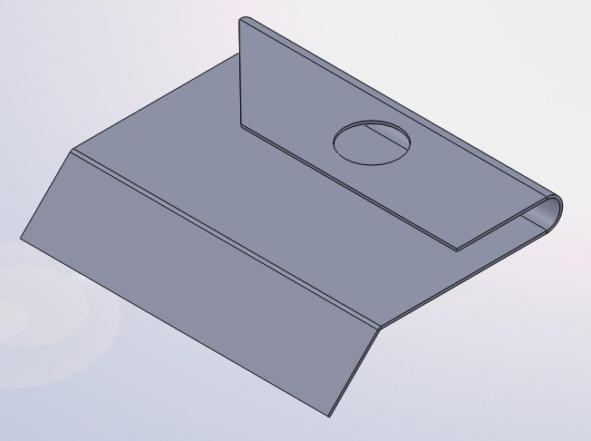
Votre pièce est trouée ! :D
Emboutir la pièce
L'emboutissage consiste à donner une certaine forme à la tôle. Pensez à une plaque de tôle plane, que l'on va presser pour obtenir une forme différente. L'emboutissage est un peu compliqué à réaliser sur SolidWorks. Tout d’abord, créez la pièce de tôlerie à emboutir. Dans cet exemple, nous prendrons une simple plaque :
Créez ensuite une nouvelle pièce, qui va constituer notre forme d'emboutissage. Commencez cette pièce par un simple pavé :
Puis, au-dessus de ce pavé, modélisez la forme de votre emboutissage. Pour l'exemple, nous prendrons une simple "calotte sphérique", ou dôme. ;)
Puis effectuez un congé entre la forme et le pavé :
Il ne vous reste plus qu'à enlever le pavé en effectuant un enlèvement de matière :
Ensuite, il faut définir cette pièce comme étant une forme d'emboutissage. Pour cela, cliquez sur le bouton :
Un panneau apparait. Sélectionnez alors la face d'appui, celle sur laquelle on va appuyer pour réaliser l'emboutissage. Vous pouvez aussi sélectionner les faces à enlever, mais ce n'est pas forcement nécessaire.
La face d'appui apparait en bleu, les autres en jaune. Les faces à enlever sont en rouge.
Enregistrez cette pièce dans vos documents par exemple, avec l'extension .sldftp :
Déplacez ensuite ce fichier dans le dossier d'installation de SolidWorks, par défaut : C:\Program Files\SolidWorks\samples
Retour à votre pièce de tôlerie. Pour aller chercher votre forme, il vous faut aller dans l'explorateur de fichier qui se trouve à droite de votre écran :
Votre pièce est là ! :D Faite glisser le fichier sur votre plaque de tôle, l'emboutissage se fait automatiquement :
Vous pouvez alors placer précisément l'embouti grâce à son esquisse :
SolidWorks vous permet d'afficher la pièce de tôlerie dans son état déplié. Pour cela, il vous suffit d'appuyer sur :
Si vous voulez revenir à l'état plié, ré-appuyez sur le bouton. ;)
Cette option est très pratique pour exporter le profil de la tôle vers un forma DWG ou DXF, ce qui permettra d'exporter le profil vers AutoCAD par exemple. Pour cela, faites un clic-droit sur "État déplié" dans l'arbre de conception, et cliquez sur :
Choisissez vos paramètres, et voici votre DXF ! :D
Concernant cette partie sur l'animation, nous allons, pour plus de clarté, faire un tutoriel pas à pas, un peu comme un TP. Cela permet d'avoir un exemple pour mieux comprendre. ;) Voici comment nous allons procéder :
Création de pièces à animer,
Assemblage des pièces,
Animation des pièces,
Rendu de l'animation.
Notre projet sera donc d'animer un système (ni trop simple ni trop complexe). Ce projet sera une "grue miniature". Il nous faut donc :
L'animation consistera sur SolidWorks à faire une "étude de mouvement". Cliquez ici pour créer un nouvelle étude de mouvement :
Ou alors, cliquez sur l'onglet en bas :
L'étude de mouvement s'ouvre :
Vous pouvez voir à gauche le nom des pièces de votre assemblage ainsi que leurs contraintes.
Animer le socle
Nous allons commencer par faire tourner le socle de 90°. Cette rotation devra s'effectuer en 4 secondes. Pour faire tourner le composant, il va falloir lui attribuer un "moteur circulaire" :
Le panneau s'ouvre :
Choisissez un moteur circulaire, la face du composant à faire tourner, et dans "Mouvement", sélectionnez "Distance". Renseignez alors l'angle, et le temps. Validez en appuyant sur :
Appuyez ensuite sur :
L'animation se calcule. ;)
Animer la pièce coulissante
Nous allons animer la pièce coulissante juste après que le socle aie pivoté. C'est à dire que l'animation commencera à 4 sec. et se terminera disons à 8 sec. Allons y ! Tout d'abord, il faut créer un contrainte de distance entre la pièce coulissante et le bout de la flèche :
Sélectionnez la contrainte sur la gauche de votre étude de mouvement :
Copiez ensuite la clé de cette contrainte à 4 sec. et 8 sec.
Pour l'instant, la clé a la même valeur, c'est à dire 300 (la distance que l'on a choisi). Pour la troisième "clé", à 8 sec. , double cliquez et mettez la valeur "100". Recalculez l'image, ça marche ! :D
La courte animation que nous avons fait n'utilise qu'une petite partie des outils mis à votre disposition pour l'animation.
Votre projet est terminé ? Faites-en un rendu avec Photoview 360 ! :D Cette partie va vous permettre de prendre connaissance du logiciel, pour faire des rendus de qualité !
Pour l'instant, votre projet n'est pas très inspirant. ^^ Nous allons donc commencer par lui appliquer des apparences.
Apparences
Il s'agit du bouton :
Cliquez dessus, une fenêtre apparait, vous offrant un choix de beaucoup de textures :
Comme vous pouvez le voir, la fenêtre est composée d'un choix de catégorie à gauche, du contenu de ces catégories, c'est à dire apparences' à droite, et de deux onglets. Vous pouvez naviguer dans les catégories pour vous donner une idée des apparences proposées. ;) Allons dans la catégorie qui correspondrai à notre vis : "metal", puis "aluminum".
Sélectionnez ensuite "brushed aluminum" par exemple, puis faites un "glissé-déposé" sur votre modèle. Comme vous pouvez le voir, la texture est appliquée sur la vis. Renouvelez l'opération sur l'écrou pour lui assigner également la texture.
Mode de sélection
Pour appliquer une apparence, vous avez le choix entre plusieurs modes de sélections :
Par défaut, les textures sont appliquées par "Apparences". Mais vous pouvez aussi appliquer votre texture sur une seule face de votre modèle.
Environnements
Il s'agit du bouton :
Une fenêtre s'ouvre, présentant un choix d'environnements pour votre scène :
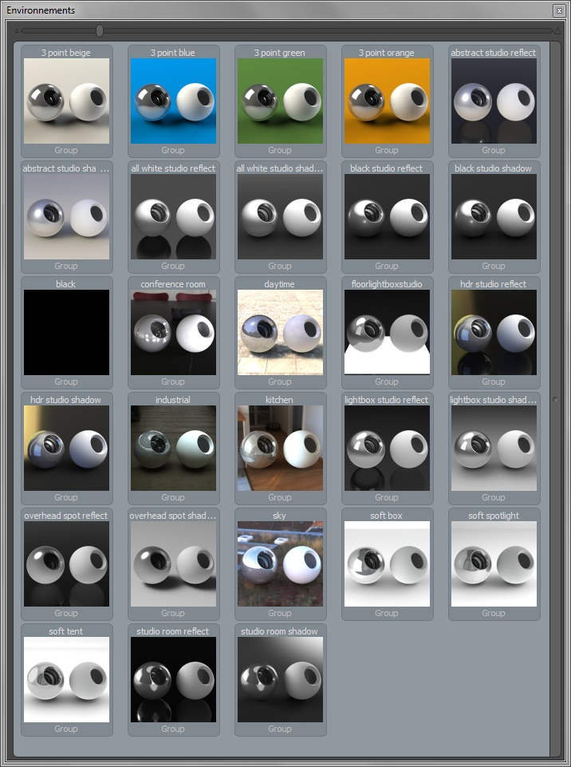
Pour appliquer un environnement, faites un glisser-déposer sur votre aperçu.
La première partie de ce TP consiste à modéliser la vis ; la deuxième partie l'écrou. N'hésitez pas, si vous hésitez justement, à reprendre les cours précédents.
Le projet que vous allez réaliser ressemblera à ceci : Cliquez pour grandir
Cahier des charges
La pièce que vous créerez devra respecter ces plans :
Créez donc une nouvelle pièce, enregistrez votre fichier sous "Vis" et commencez ! :D
Correction
Alors! Fini ? Corrigeons !
Pour commencer : Créez une esquisse sur le plan de dessus, et extrudez la de 20 mm :
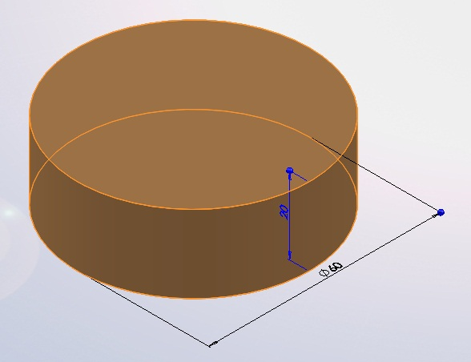
Faites de même pour la tige :
Créez un plan à 60 mm du plan de dessus, pour commencer le filetage :
Le filetage a une forme d'hélice. Il faudra donc créer cette hélice, puis la forme à enlever autour de cette hélice. Créez un cercle du diamètre de la vis sur le plan :
Puis l'hélice :
Sur le plan de face ou de droite, dessinez la forme à enlever grâce à une nouvelle esquisse.
Avec la spirale et cette esquisse, effectuez un enlèvement de matière avec balayage pour modéliser le filetage :
Enlevez de la matière pour pouvoir entrer le tournevis ! :p
Passons maintenant à l'écrou. Je vous donne les plans :
L'écrou doit être fileté comme la vis.
Aller ! Au boulot !
Correction
Vous avez bien sur tout réussi, mais nous allons quand même corriger ensemble. ^^
Créez une esquisse sur le plan de dessus. L'esquisse doit contenir un hexagone et un cercle de 30 de diamètre.
Effectuez l'extrusion de 25 mm.
Il va falloir ensuite dessiner les "bords". Ça doit être la partie ou vous vous êtes le plus énervé pour trouver la solution ! :p Pour effectuer cet enlèvement de matière, il va falloir créer une esquisse comme ceci :
Cette esquisse, grâce à un enlèvement de matière avec révolution, va faire apparaitre les 'bords". ;)
Congédiez les arrêtes :
Chanfreinez la partie intérieure :
Puis créez le filetage (même technique que pour la vis) :
Ce petit TP aura comme objectif la conception d'un pneu. Ce n'est pas un vrai pneu professionnel que vous allez modéliser mais plutôt une version schématique. Le but étant surtout d'utiliser de manière plus concrète l'enroulement. Les esquisses comporteront des cotes assez simples.
Voici à quoi ressemblera votre magnifique pneu :D : Cliquez pour agrandir
Cahier des charges :
Voici le motif (pour les empreintes) dont vous vous inspirerez :
Cliquez pour agrandirLa forme globale du motif doit être respectée, vous n'êtes pas obligés de le suivre au millimètre près. ^^
Le pneu aura un diamètre extérieur de 640mm, un diamètre intérieur de 250mm, une largeur de 200mm.
Le pneu aura une forme très simplifiée, et devra être évidé :
La profondeur du dégauffrage, c'est à dire la profondeur de l'empreinte, sera de 6mm.
Je vous souhaite bon courage, et je vous laisse à votre clavier et à votre souris ! ^^
Déjà fini ? C'était si facile que ça ? ^^ Passons à la correction !
La première chose à faire est la modélisation du cylindre, qui servira de base à notre pneu. Pour cela il suffit, sur le plan de face ou de dessus, de créer une esquisse comme ceci :
Nous allons maintenant nous pencher sur la partie la plus "compliquée" de la modélisation. Il s'agit des empreintes du pneu, ses sculptures. Pour pouvoir s'inspirer du motif que je vous ai donné, il est plus simple de pouvoir directement dessiner dessus. Pour ce faire, créez une esquisse sur le plan de dessus. Dans les outils d'esquisse, cliquez sur "Image d'esquisse" (
)
Je ne vois pas ce bouton ? Où est-il ? :euh:
Si vous êtes dans ce cas, il va falloir customiser votre interface ! Cliquez sur le bouton "Option" puis "Personnaliser" (cf Présentation et préparation de SolidWorks - Paramétrer SolidWorks) Dans l'onglet "Commande" Sélectionnez la catégorie "Esquisse". À droite, dans la zone "Bouton", est apparu :
Glisez-déposez ce bouton directement sur votre interface, et voilà !
Vous avez donc créé une esquisse sur le plan de dessus, et cliqué sur le bouton "Image d'esquisse". Allez donc chercher le fichier image du motif à suivre et ouvrez-le. L'image est trop grande. Il va falloir la retoucher un peu :
La transparence est facultative
Le décor est planté, nous allons pouvoir commencer à "usiner" notre pneu. ;)
Le motif n°1
J'ai décidé de séparer les motifs en deux parties car certains sont symétriques, d'autres non. Nous allons commencer avec le motif symétrique. Il s'agit de celui-là :
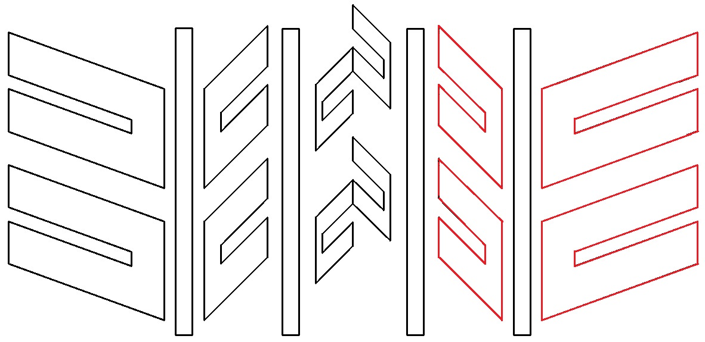
Sur le même plan que l'image, créez une esquisse avec ce motif (approximativement) :
Le motif n°2
Le second motif sera celui-ci (en bleu) :
De la même façon, créez une esquisse sur le plan de votre image de référence, en reproduisant approximativement le motif :
L'enroulement
Vos deux motifs tracés, vous devez maintenant les enrouler autour de votre pneu. Cliquez donc sur le bouton enroulement : Sélectionnez "Dégaufrer" sélectionnez la face extérieure du cylindre, renseignez la profondeur (6mm), ainsi que vos "esquisses sources", c'est-à-dire vos motifs. Validez en appuyant sur :
Les rainures
Le plus simple à réaliser, il s'agit simplement d'un enlèvement de matière avec révolution. Sur le plan de face, voici l'esquisse :
Cet exercice aura pour but la modélisation des principales pièces d'un moteur. Il s'agit d'une modélisation très simplifiée, avec des cotes simples. Il s'agit surtout ici d'arriver à animer le piston, pour avoir ensuite les différents mouvements des pièces entres elles. ;)
Le moteur sera composé des pièces suivantes :
un piston ;
une bielle ;
un vilebrequin ;
un carter en trois pièces ;
un axe pour le piston ;
un joint pour la bielle.
Voici le résultat de cet exercice : (Cliquez pour agrandir)
Tout d'abord, un petit rappel sur le fonctionnement du moteur. ;) Le moteur que nous allons modéliser est un "micro-moteur 2 temps". C'est donc un petit moteur à explosion, avec un seul piston.
Il s'agit ici d'une sorte de mini-tutoriel pas à pas, où nous réaliserons ensemble notre chef d’œuvre ! :p
Le piston n'est pas très compliqué à réaliser. Il s'agit d'une révolution, à laquelle nous allons retirer l'axe pour la bielle. Voici l'esquisse de la révolution, que vous pouvez réaliser sur un plan de face ou de droite :
Effectuez ensuite votre révolution (sur 360°) :
Vue en coupe Créez ensuite une esquisse comme ceci :
Effectuez l'enlèvement de matière :
Vue en coupe
Il ne vous reste plus qu'à enregistrer cette pièce sous "piston.SLDPRT".
La bielle sera un peu plus compliquée que le piston. Nous allons modéliser une moitié de bielle, puis la symétriser. Voici le résultat final :
Commencez par créer une esquisse sur le plan de face, alignée sur l'origine :
Effectuez une révolution :
Créez ensuite une autre esquisse, pour une autre révolution, toujours sur le plan de face. Son axe de rotation (entouré en rouge) doit être à 45 mm de l'origine :
Effectuez une révolution :
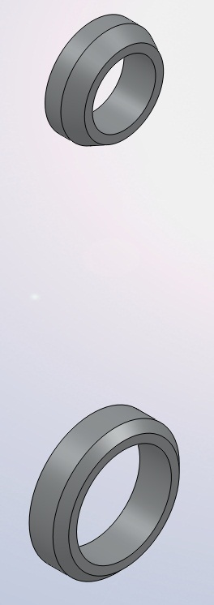
Il va falloir maintenant modéliser la partie qui va lier ces deux révolutions. Pour cela, nous allons nous servir d'une surface !
Créez une esquisse sur le plan de face comme ceci :
A partir de cette esquisse, créez une surface par extrusion :
Cette surface va en quelque sorte servir de "butée" à l'extrusion que nous allons faire. Créez donc une esquisse, cette fois-ci sur le plan de droite :
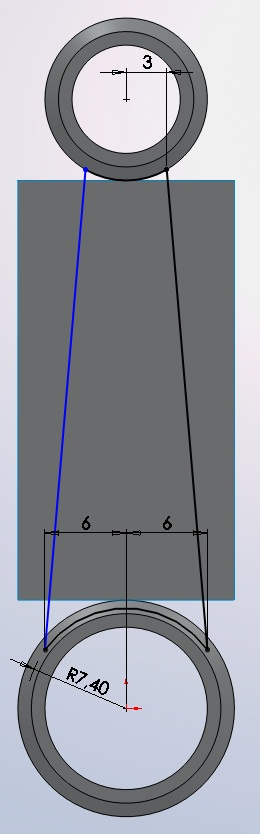
Les cotes sont approximatives, le rayon en bas doit être inférieur au rayon du cercle existant. Pour l'extrusion de cette esquisse, choisissez l'option "Jusqu'à la surface" et sélectionnez votre surface :
Validez, puis effacez votre surface comme ceci : Dans l'arbre de création FeatureManager, développez le dossier "Corps" :
Votre surface est ainsi effacée du modèle. :) Créez un plan à 10 mm du plan de droite :
Ensuite, sur ce plan, créez une esquisse en décalant les cotés comme ceci grâce au bouton :
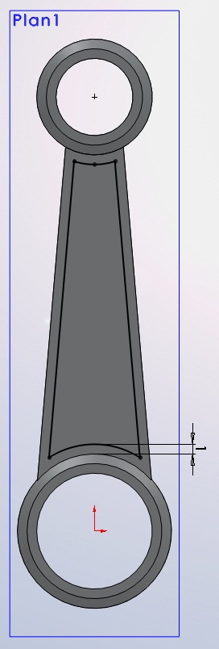
Effectuez un enlèvement de matière extrudée de cette esquisse sur 9mm, puis la symétrie du tout :
La pièce que nous allons modéliser est un petit peu plus complexe :
Commençons ! Créez une esquisse sur le plan de droite :
Effectuez une révolution de cette esquisse, puis, toujours sur le plan de droite, créez une esquisse comme ceci :
Effectuez la révolution de cette esquisse autour de l'axe. Toujours sur le même plan, créez une esquisse comme ceci :
Effectuez l'enlèvement de matière avec révolution. Comme vous pouvez le voir, il y a un petit problème vu du plan de face :
Pas de panique ! Cliquez sur la face du dessous pour y créer une esquisse :
Sélectionnez les deux arrêtes circulaires et cliquez sur l'outil "Convertir les entités". Validez en appuyant sur
Cliquez ensuite sur l'esquisse, puis sur "Extrusion". Sélectionnez alors "Jusqu'au corps". Renseignez alors le corps en question en sélectionnant notre première révolution :
Comme on peut le voir sur cette vue en coupe, il y a encore une chose à faire pour le cylindre :
Passons maintenant à l'assemblage de toutes nos pièces. Commençons par placer les pièces qui ne bougerons pas, à savoir les carters. Placez pour commencer le carter n°2. Il sera fixé automatiquement. Ajoutez le carter n°1. Appliqez lui une contrainte coaxiale avec le carter n°2 comme ceci :
Collez les deux faces :
Maintenant, pour mieux s'y retrouver, mettez le carter n°2 en transparence. Ajoutez le carter n°3. Appliquez lui une contrainte coaxiale :
Laissez le comme ça pour l'instant. Vous pouvez également le mettre en transparence. ;) Ajoutez le vilebrequin. Il doit lui aussi être coaxial :
Appliquez une contrainte de coïncidence entre ces deux faces :
Maintenant, nous allons assembler notre piston. Ajoutez le piston, la bielle et l'axe. Pour contraindre le piston et l'axe, sélectionnez grâce à l'arbre de création les plans de face de ces pièces. Appliquez leur une contrainte de coïncidence :
Faites correspondre les trous avec à une contrainte coaxiale :
Faites de même pour la bielle :
Plcez ensuite le piston dans son cylindre, puis la bielle dans l'axe du vilebrequin :
Ajoutez le joint :
Faites coïncider les deux faces suivantes :
Et voici votre moteur !
Essayez maintenant de faire tourner le vilebrequin, vous verrez que le piston bouge aussi, comme un vrai moteur ! :D Vous pouvez l'améliorer bien sur, rajouter des pièces comme des vis par exemple, mettre des couleurs, ...
Cet exercice proposera un exemple de l'utilisation de la fonction "courroie" sur SolidWorks. Il s'agit d'un exercice et non d'un TP, nous allons ensemble, pas à pas, réaliser notre exemple de courroie. ;)
Voici le résultat final :
Mais tout d'abord, pour ceux qui l'ignoreraient, une courroie est une bande souple servant à transmettre un mouvement d'une poulie à une autre. Les poulies étant les "roues" grises sur le résultat final ci-dessus. On trouve des courroies dans les moteurs d'automobile par exemple (courroie de transmission, ...).
L'exercice se porte surtout sur la fonction courroie, vous n'êtes pas obligé de suivre mes cotes au milimètre près. ;) Effectuez la révolution, puis trouez la pièce comme ceci :
Le support
Le support sera très simple, une planche avec quatre trous. Voici l'esquisse :
La position des trous n'a pas d'importance, mais veillez à ne pas trop les rapprocher. Effectuez une petite extrusion pour finir :
L'assemblage
Je vous laisse le faire, ce n'est pas bien compliqué !
Voici donc un exercice un peu plus détourné de l'utilisation de SolidWorks que les autres : apprendre pas à pas à modéliser une Lamborghini Aventador. Vous vous êtes tous dit après avoir un peu touché à SolidWorks (ou tout autre logiciel de 3D) : "Et si je modélisais une voiture ?". Il s'agit d'une opération assez compliquée.
Prêts à modéliser une Lamborghini Aventador grâce à SolidWorks ?! :soleil:
Nous commençons donc avec la mise en place d'un élément fondamental pour toute modélisation de voitures dans quelque logiciel que ce soit : Les Blueprints.
La pièce que l'on pourrait qualifier de "pare-choc avant" est modélisé en volumique.
Eh bien voilà, ce tutoriel sur SolidWorks s'achève ici !
Vous êtes devenus des pros, et vous êtes maintenant capables de réaliser plein de projets différents sur ce logiciel ! ;) Mais la clé pour progresser dans le domaine de la CAO en général est la pratique.
Je tiens à remercier coma94 ainsi que Coyote, les validateurs qui se sont occupés de la relecture et de la validation du tutoriel, et qui m'ont corrigé. Et bien sûr, merci à vous, lecteurs ! :D


 Perpendiculaire
Perpendiculaire


 Parallèle
Parallèle Tangente
Tangente Coaxiale
Coaxiale


{kind=link}
{kind=link}
{kind=link}
{kind=link}
{kind=link}
{kind=link}